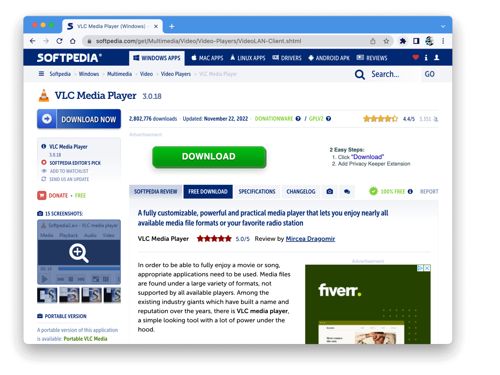

The disguised ads deceptive pattern works by deliberately blurring the line between actual content and advertising, creating confusion for users. These ads are often designed to look like interface elements, related articles, or other content that users might be interested in, making it more likely that users will click on them. By doing this, website owners may generate more revenue from ad impressions, and advertisers may benefit from increased clickthrough rates that may result in more sales.
Softpedia, a popular software download website, often uses disguised ads on their software download pages to boost ad revenue. Their approach involves displaying advertisements with a prominent download button that closely resembles the actual download button for the desired software. This leads users to mistakenly click on the ad, thinking they are downloading the software.
